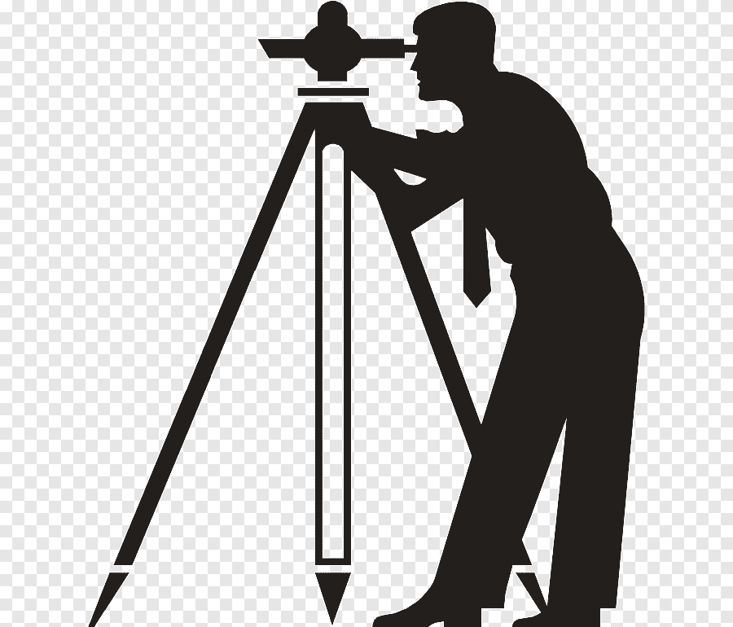

Présentation
Le département de topographie de l’IAV Hassan II forme des ingénieurs en Sciences Géomatiques et Ingénierie Topographique. Les étudiants y apprennent la cartographie, la géodésie, la photogrammétrie, le SIG, la télédétection et les applications géospatiales modernes.
Quelques images du département
Domaines d’application
- Topographie et cartographie de précision
- Photogrammétrie et télédétection
- Géomatique appliquée à l’agriculture et à l’urbanisme
- Systèmes d’Information Géographique (SIG)
- Levés GPS et drones